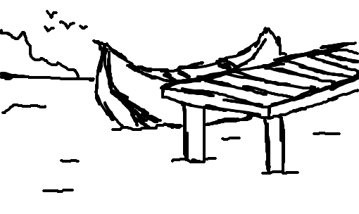

1 - Deus
2 - João Vitor
Parabéns! se você chegou ate este site é porque seu nome consta na lista e você não é Deus [ate porque ele já sabia disso ] Mas deixarei aqui registrado
Te amo Deus!! muito obrigada por tudo. Por sempre ter estado aqui nos melhores e piores momentos.Obrigada pelas bençãos na minha vida mas muito obrigada pelos momentos dificeis que ensinaram muito e sobretudo o senhor ter estado comigo nesses momentos e eu também te agradeço por uma das maiores bençãos da minha vida que foi o meu amorzinho. Prometo cuidar bem do presente que o senhor me deu pelo resto dos nossos dias e faze - lo muito feliz e para tanto fiz esse site.

Olá, João Vitor, meu noivo lindooo! Fiz esse site para você. Sempre que você sentir minha falta pode vir aqui ler tudo o que coloquei para você.

Queria primeiramente lhe dizer Bom diaaa!, ou Boa tardee!, ou Boa noitee ou Boa madruga, e complementando, dizer para você, que você é um ser humaninho bem impotante na minha vida! e eu te amooooo muitooooo.

Não poderia deixar de ressaltar, aqui também, que você é uma pessoa bastante incrivel a qual eu admiro bastante. Perto de você eu me sinto segura e tranquila. Para mim você é como um Cas é para um barco num dia de tempestade. Você é o meu porto seguro. Queria agradecer por tudo e dizer que eu estou aqui pro que der e vier. Como diria o bitLife "Tô contigo e não abro" de poucas coisas eu tenho certeza mas eu tenho certeza de que nunca vou te deixar! isso eu prometo e pode confiar.
E depois de tanto tempo juntos, eu queria falar também que eu não imagino a gente separado, eu sem você, você sem eu, deve ser tipo futebol sem bola, piu - piu sem frajola, avião sem asa, fogueira sem brasa.
Imagens fortes aa seguir: de eu sem você e você sem eu.


Ate porque Agente junto pode ate ser erro de português mas a gente separado é erro do destino. E digo mais gatinho, com você ao meu lado me sinto a rainha do mundo mesmo não sendo nem tendo nada disso kkk , com você ao meu lado, sinto que tenho tudo.

Eii...

Mas o relógio tá de mal comigo... Como diria você, meu lindo, espero que a semana acabe, espero que o tempo passe para que eu possa te ver de novo
Então... Também não poderia deixar de citar aqui né kkk a sua grande beleza. Você é muitooooooooooo linduuuuu, charmoso demaiss, tão maravilhoso chega eu passo mal.

Meu amorzinho, eu amoooooooooo seu olhinho verdinho, ele é tão linduuuu parece que eu estou olhando para a água do oceano, dá ate uma pazzzz só de lembrar. E quando o sol reflete nele é tão beloo.
Sua barbinha, eu adoroooo. Você fica muitooo charmoso com o cavanhaque, eu também acho que fica muitooo lindo sem barba também, fica parecendo um principe da Disney [Sem brincadeira nenhuma] Mas eu achooo lindoooo das duas formas
Eu acho o seu cabelo maravilhoso!!! Tem tipo um topete muito maneiro e quando você corta o cabelo dá um charme danado, e pra completar meu mozão é xerosooo, bonito, inteligente, bem - educado,tem uns bração fortão. Aí é bão demais.

Enfim... meu mozão, te amoooooooooooooooooooo muitãooooooooooooooooooooo, com todos os "O" do mundo e com meu coração todinho. Espero te ver logo,logo, para matar as saudades.